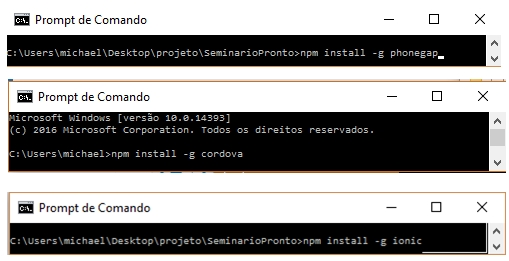
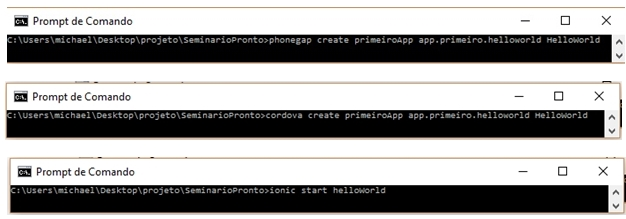
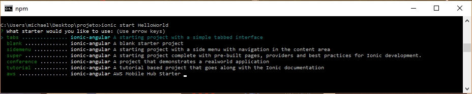
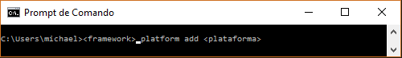
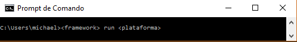
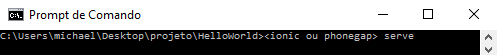

Sobre
Após a instalação do Node js, podemos utilizar o comando npm necessário para a instalação dos três frameworks:
Após a instalação dos frameworks já estamos habilitados a criar nosso primeiro projeto. Temos três formas de fazer isso já que utilizamos três frameworks:
phonegap ou cordova create (nome do diretório) (nome do pacote) (nome do projeto)
No ionic o comando mudou, ficou reduzido a simplemente pedir para o ionic iniciar o projeto e o nome do diretório, o resto, como nome do app você pode editar no config.xml. outro diferencial é o template:
Após todos esse processos, já temos o esqueleto do nosso app, agora devemos adicionar uma plataforma:
Agora podemos fazer o deploy, utilizando os seguintes comandos:
podemos visualizar o app em um navegador e ver as alterecões em tempo real utilizando o comando
